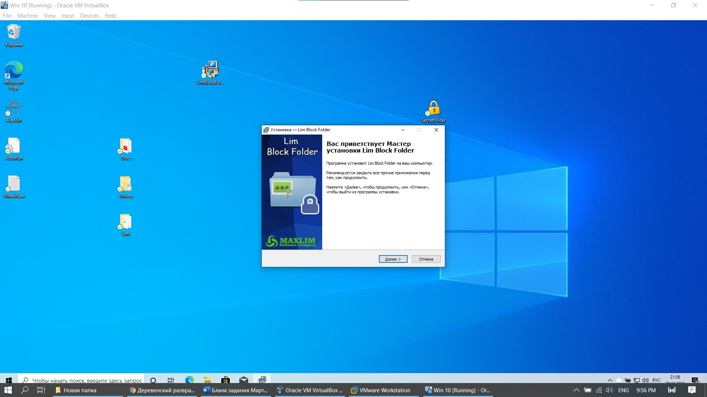
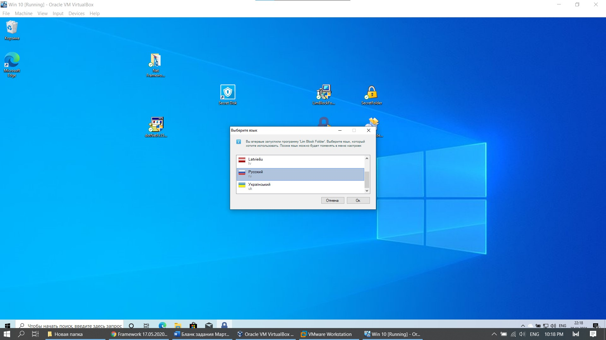
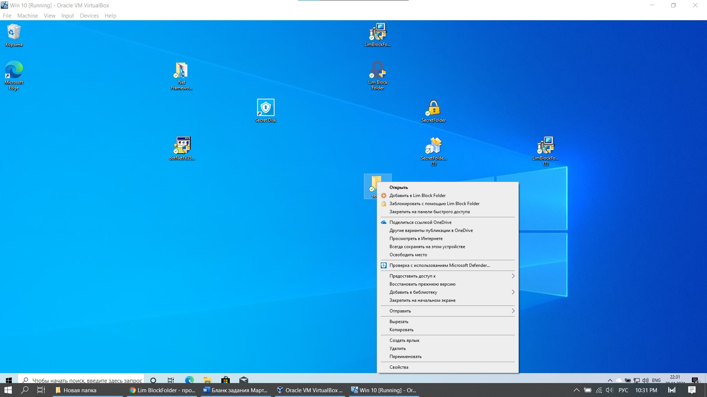
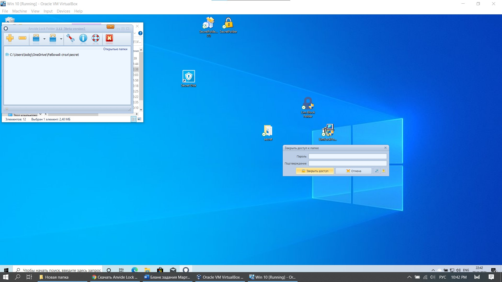
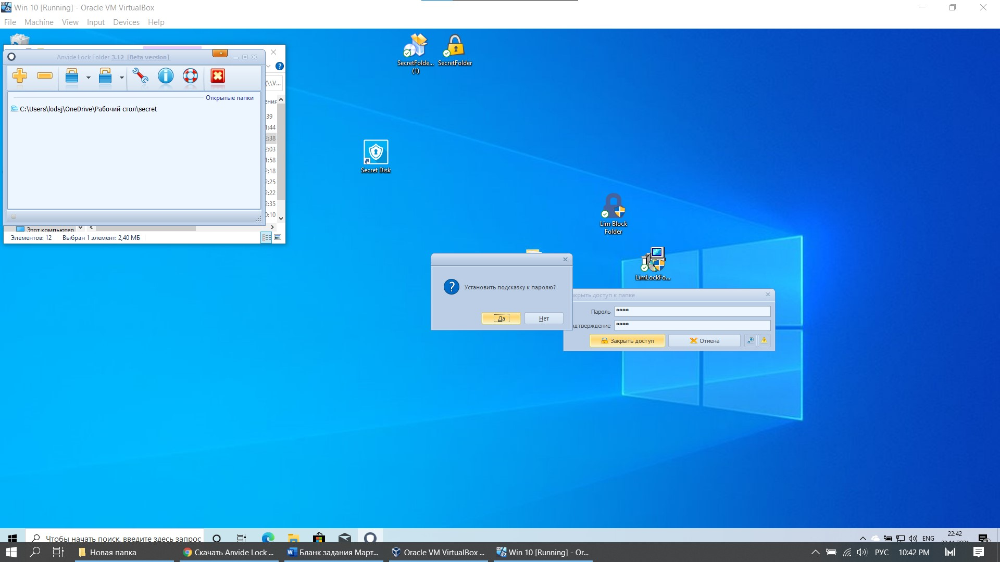

3 LimBlockFolder |
| Lim Block Folder - предназначена для мгновенной защиты папок паролем. Она быстро и надежно скроет информацию на жестких дисках и съемных носителях. Программа имеет две степени защиты данных, первый простой способ защиты данных (но даже при нем данные будут надежно спрятаны), но также есть и второй способ, улучшенная защита, которая еще и зашифрует данные, но для скрытия вторым способом потребуется немного больше времени. |
| На каждую папку можно установить отдельный пароль, а данные скрытые на съемных носителях, на них и остаются, и данные можно открыть на другом компьютере установив программу Lim Block Folder. Программа имеет удобный и интуитивно понятный интерфейс. Для большей безопасности можно установить пароль и на программу и тогда никто кроме Вас ее не запустит. |
| Нашему взгляду предстает установщик программы. Установка состоит из 2х этапов – выбора языка и выбора места для установки. Рисунки 1-2. |
|  |
| Рис. 1 Установка программы |
|  |
| Рис. 2 Выбор языка |
| После установки программы мы можем нажатием пкм по папке – защитить ее или добавить в список для конфигурации папок. При нажатии которых у нас появляется ввод пароля для ее защиты, изображено ан рисунке 3. |
|  |
| Рис. 3 Контекствное меню |
|  |
| Рис. 4 Ввод пароля для защиты |
| Стоит отметить, что после ввода пароля – можно поставить подсказку, с помощью котрой можно в будущем восстановить его. |
|  |
| Рис. 5 Ввод подсказки |
| Вывод: Удобная программа по функционалу, напоминающая SecretFolder, но добавляющая функции в контекстные меню. Стоит отметить, что программа на официальном сайте называется одним именем, но по итогу в контекстном меню – одно название, а в программном меню – другое. |
| Также было сложно ее установить, сложно было запустить ее. При запуске появлялись ошибки. |